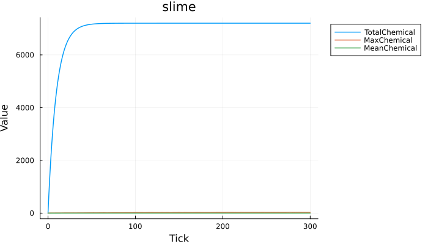
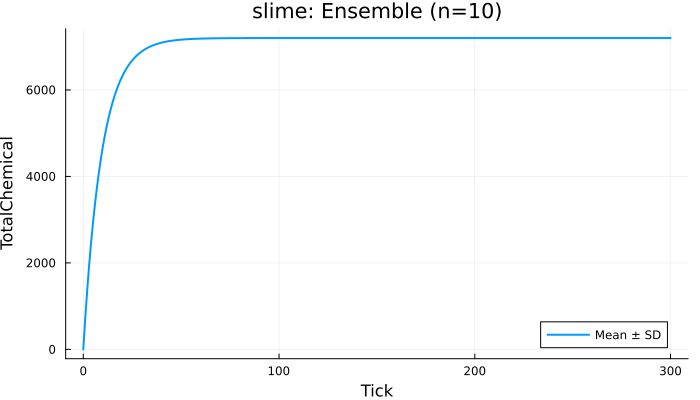
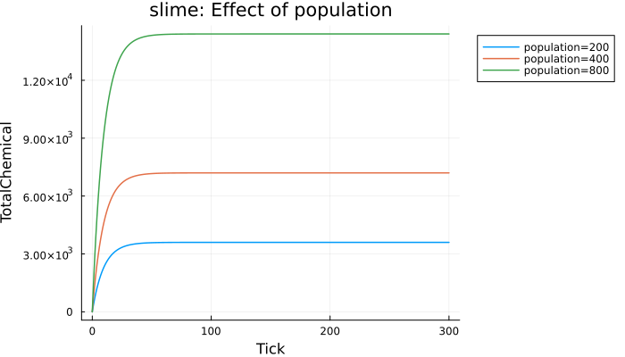

Slime
Overview
WHAT IS IT?
This model is inspired by the aggregation behavior of slime-mold cells. The slime mold spends much of its life as thousands of distinct single-celled units, each moving separately. Under the right conditions, those many cells will coalesce into a single, larger organism. When the environment is less hospitable, the slime mold acts as a single organism; when the weather turns cooler and the mold enjoys a large food supply, “it” becomes a “they.” The slime mold oscillates between being a single creature and a swarm.
This model shows how creatures can aggregate into clusters without the control of a “leader” or “pacemaker” cell. This finding was first described by Evelyn Fox Keller and Lee Segel in a paper in 1970.
Before Keller began her investigations, the conventional belief had been that slime mold swarms formed at the command of “pacemaker” cells that ordered the other cells to begin aggregating. In 1962, Shafer showed how the pacemakers could use cyclic AMP as a signal of sorts to rally the troops; the slime mold generals would release the compounds at the appropriate moments, triggering waves of cyclic AMP that washed through the entire community, as each isolated cell relayed the signal to its neighbors. Slime mold aggregation, in effect, was a giant game of Telephone — but only a few elite cells placed the original call.
For the twenty years that followed the publication of Shafer’s original essay, mycologists assumed that the missing pacemaker cells were a sign of insufficient data, or poorly designed experiments. But Keller and Segel took another, more radical approach. They shows that Shafer had it wrong – that the community of slime mold cells were organizing themselves without any need for pacemakers. This was one of the first examples of emergence and self-organization in biology.
Initially, biologists did not accept this explanation. Indeed, the pacemaker hypothesis would continue as the reigning model for another decade. Now, slime mold aggregation is recognized as a classic case study in bottom-up self-organizing behavior.
In this model, each turtle drops a chemical pheromone (shown in green). The turtles also “sniff” ahead, trying to follow the gradient of other turtles’ chemicals. Meanwhile, the patches diffuse and evaporate the pheromone. Following these simple, decentralized rules, the turtles aggregate into clusters.
THINGS TO NOTICE
With 100 turtles, not much happens. The turtles wander around dropping chemical, but the chemical evaporates and diffuses too quickly for the turtles to aggregate.
With 400 turtles, the result is quite different. When a few turtles happen (by chance) to wander near one another, they create a small “puddle” of chemical that can attract any number of other turtles in the vicinity. The puddle then becomes larger and more attractive as more turtles enter it and deposit their own chemicals. This process is a good example of positive feedback: the more turtles, the larger the puddle; and the larger the puddle, the more likely it is to attract more turtles.
THINGS TO TRY
Try different values for the SNIFF-THRESHOLD, SNIFF-ANGLE, WIGGLE-ANGLE, and WIGGLE-BIAS sliders. How do they affect the turtles’ movement and the formation of clumps?
Change the SNIFF-ANGLE and WIGGLE-ANGLE sliders after some clumps have formed. What happens to the clumps? Try the same with SNIFF-THRESHOLD and WIGGLE-BIAS.
EXTENDING THE MODEL
Modify the program so that the turtles aggregate into a single large cluster.
How do the results change if there is more (or less) randomness in the turtles’ motion?
Notice that the turtles only sniff for chemical in three places: forward, SNIFF-ANGLE to the left, and SNIFF-ANGLE to the right. Modify the model so that the turtles sniff all around. How does their clustering behavior change? Modify the model so that the turtles sniff in even fewer places. How does their clustering behavior change?
What “critical number” of turtles is needed for the clusters to form? How does the critical number change if you modify the evaporation or diffusion rate?
Can you find an algorithm that will let you plot the number of distinct clusters over time?
NETLOGO FEATURES
Note the use of the patch-ahead, patch-left-and-ahead, and patch-right-and-ahead primitives to do the “sniffing”.
RELATED MODELS
Ants uses a similar idea of creatures that both drop chemical and follow the gradient of the chemical.
CREDITS AND REFERENCES
Keller, E & Segel, L. (1970). Initiation of slime mold aggregation viewed as an instability. Journal of Theoretical Biology, Volume 26, Issue 3, March 1970, Pages 399–415.
Wilensky, U., & Resnick, M. (1999). Thinking in levels: A dynamic systems approach to making sense of the world. Journal of Science Education and Technology, 8(1), 3-19.
Johnson, S. (2001). Emergence: The Connected Lives of Ants, Brains, Cities, and Software. New York: Scribner.
Resnick, M. (1996). Beyond the centralized mindset. Journal of the Learning Sciences, 5(1), 1-22.
See also http://www.creepinggarden.com for video of slime mold.
HOW TO CITE
If you mention this model or the NetLogo software in a publication, we ask that you include the citations below.
For the model itself:
- Wilensky, U. (1997). NetLogo Slime model. http://ccl.northwestern.edu/netlogo/models/Slime. Center for Connected Learning and Computer-Based Modeling, Northwestern University, Evanston, IL.
Please cite the NetLogo software as:
- Wilensky, U. (1999). NetLogo. http://ccl.northwestern.edu/netlogo/. Center for Connected Learning and Computer-Based Modeling, Northwestern University, Evanston, IL.
COPYRIGHT AND LICENSE
Copyright 1997 Uri Wilensky.

This model is licensed under the Creative Commons Attribution-NonCommercial-ShareAlike 3.0 License. To view a copy of this license, visit https://creativecommons.org/licenses/by-nc-sa/3.0/ or send a letter to Creative Commons, 559 Nathan Abbott Way, Stanford, California 94305, USA.
NetLogo itself is free software for non-commercial use under the terms of the GNU General Public License (see full license information here).
To inquire about commercial licenses for either NetLogo or specific models from the models library, please contact netlogo-commercial-admin@ccl.northwestern.edu.
This model was created as part of the project: CONNECTED MATHEMATICS: MAKING SENSE OF COMPLEX PHENOMENA THROUGH BUILDING OBJECT-BASED PARALLEL MODELS (OBPML). The project gratefully acknowledges the support of the National Science Foundation (Applications of Advanced Technologies Program) – grant numbers RED #9552950 and REC #9632612.
This model was developed at the MIT Media Lab using CM StarLogo. See Resnick, M. (1994) “Turtles, Termites and Traffic Jams: Explorations in Massively Parallel Microworlds.” Cambridge, MA: MIT Press. Adapted to StarLogoT, 1997, as part of the Connected Mathematics Project.
This model was converted to NetLogo as part of the projects: PARTICIPATORY SIMULATIONS: NETWORK-BASED DESIGN FOR SYSTEMS LEARNING IN CLASSROOMS and/or INTEGRATED SIMULATION AND MODELING ENVIRONMENT. The project gratefully acknowledges the support of the National Science Foundation (REPP & ROLE programs) – grant numbers REC #9814682 and REC-0126227. Converted from StarLogoT to NetLogo, 2000.
Parameters
| Parameter | Type | Default | Description |
|---|---|---|---|
population | Int | 400 | population |
sniff_threshold | Float64 | 1.0 | sniff threshold |
sniff_angle | Float64 | 45.0 | sniff angle |
wiggle_angle | Float64 | 40.0 | wiggle angle |
wiggle_bias | Float64 | 0.0 | wiggle bias |
evaporation_rate | Float64 | 0.9 | evaporation rate |
diffusion_rate | Float64 | 1.0 | diffusion rate |
deposit_amount | Float64 | 2.0 | deposit amount |
grid_width | Int | 81 | -40..40 |
grid_height | Int | 81 | grid height |
max_ticks | Int | 300 | max ticks |
Source Code
The Julia code to run this model:
using ArkModelZoo
_, trajectory = run_slime()Time Series

Ensemble Runs
Ten replicates with different random seeds, showing mean ± standard deviation.

Parameter Sensitivity
Varying population.

Appendix: Source Code
This model is implemented in the Ark.jl Entity-Component-System (ECS) framework. The code is split into five files, each with a distinct role:
- Parameters: a mutable struct holding all configurable values.
- Components: lightweight data types attached to individual entities (agents).
- Resources: world-level shared state accessible to all systems.
- Systems: functions that operate on entities each tick, defining model behavior.
- Model: wiring that assembles the world, registers resources and systems, and provides the run entry point.
Parameters (parameters.jl)
The parameter struct uses @kwdef so that every field has a default value and can be overridden by keyword. These defaults match the original NetLogo model’s slider settings.
Base.@kwdef mutable struct SLParams
population::Int = 400
sniff_threshold::Float64 = 1.0
sniff_angle::Float64 = 45.0
wiggle_angle::Float64 = 40.0
wiggle_bias::Float64 = 0.0
evaporation_rate::Float64 = 0.9
diffusion_rate::Float64 = 1.0
deposit_amount::Float64 = 2.0
grid_width::Int = 81 # -40..40
grid_height::Int = 81
max_ticks::Int = 300
seed::Int = 42
endComponents (components.jl)
Components are lightweight data types attached to individual entities (agents). Mutable structs hold per-entity state, while empty tag structs act as markers for the ECS query system to efficiently filter entities.
mutable struct SLPosition
x::Float64
y::Float64
end
SLPosition() = SLPosition(0.0, 0.0)
mutable struct SLHeading
heading::Float64
end
SLHeading() = SLHeading(0.0)Resources (resources.jl)
Resources are world-level singletons shared across all systems, used for global state and aggregate statistics.
mutable struct SLChemicalGrid
width::Int
height::Int
chemical::Matrix{Float64}
end
function SLChemicalGrid(width::Int, height::Int)
SLChemicalGrid(width, height, zeros(Float64, width, height))
end
mutable struct SLStats
total_chemical::Float64
max_chemical::Float64
end
SLStats() = SLStats(0.0, 0.0)Systems (systems.jl)
Systems contain the model logic and execute in a defined order each tick. Each system struct implements either initialize! (run once at setup) or update! (run every tick).
# --- Initialization ---
struct InitSLSystem <: System end
function initialize!(::InitSLSystem, world::World)
params = get_resource(world, SLParams)
rng = get_resource(world, RNGResource).rng
grid = get_resource(world, SLChemicalGrid)
# Zero chemical grid
fill!(grid.chemical, 0.0)
# Create turtles at random positions with random headings
w, h = grid.width, grid.height
for _ in 1:params.population
x = rand(rng) * w + 0.5 # continuous position in [0.5, w+0.5)
y = rand(rng) * h + 0.5
heading = rand(rng) * 360.0
new_entity!(world, (
SLPosition(x, y),
SLHeading(heading),
))
end
return nothing
end
# --- Helper: patch coordinates from continuous position ---
@inline function _sl_patch(x::Float64, y::Float64, w::Int, h::Int)
return mod1(round(Int, x), w), mod1(round(Int, y), h)
end
# Helper: patch at a given heading and distance from continuous position
@inline function _sl_patch_ahead(x::Float64, y::Float64, heading::Float64,
dist::Float64, w::Int, h::Int)
θ = deg2rad(heading)
nx = x + sin(θ) * dist
ny = y + cos(θ) * dist
return mod1(round(Int, nx), w), mod1(round(Int, ny), h)
end
# --- Go System ---
struct SLGoSystem <: System end
function update!(::SLGoSystem, world::World)
params = get_resource(world, SLParams)
rng = get_resource(world, RNGResource).rng
grid = get_resource(world, SLChemicalGrid)
stats = get_resource(world, SLStats)
w, h = grid.width, grid.height
chem = grid.chemical
# Collect all turtle entities for shuffled ask ordering
turtle_data = Tuple{Entity, Int}[]
for (eids, _, _) in Query(world, (SLPosition, SLHeading))
for i in eachindex(eids)
push!(turtle_data, (eids[i], i))
end
end
Random.shuffle!(rng, turtle_data)
# Ask turtles (shuffled)
for (eid, _) in turtle_data
pos, hdg = get_components(world, eid, (SLPosition, SLHeading))
# 1. Sniff and turn toward chemical if above threshold
gx, gy = _sl_patch(pos.x, pos.y, w, h)
if chem[gx, gy] > params.sniff_threshold
_sl_turn_toward_chemical!(pos, hdg, chem, params.sniff_angle, w, h)
end
# 2. Wiggle: rt random-float wiggle_angle - random-float wiggle_angle + wiggle_bias
wiggle = rand(rng) * params.wiggle_angle - rand(rng) * params.wiggle_angle + params.wiggle_bias
hdg.heading = mod(hdg.heading + wiggle, 360.0)
# 3. Forward 1
θ = deg2rad(hdg.heading)
pos.x += sin(θ)
pos.y += cos(θ)
# Toroidal wrapping (continuous)
pos.x = mod(pos.x - 0.5, Float64(w)) + 0.5
pos.y = mod(pos.y - 0.5, Float64(h)) + 0.5
# 4. Deposit chemical on current patch
gx, gy = _sl_patch(pos.x, pos.y, w, h)
chem[gx, gy] += params.deposit_amount
end
# Diffuse chemical
diffuse!(chem, params.diffusion_rate, w, h)
# Evaporate
@inbounds for i in eachindex(chem)
chem[i] *= params.evaporation_rate
end
# Update stats
total = 0.0
mx = 0.0
@inbounds for i in eachindex(chem)
v = chem[i]
total += v
if v > mx
mx = v
end
end
stats.total_chemical = total
stats.max_chemical = mx
return nothing
end
# NetLogo turn-toward-chemical
function _sl_turn_toward_chemical!(pos::SLPosition, hdg::SLHeading,
chem::Matrix{Float64},
sniff_angle::Float64, w::Int, h::Int)
ahead_x, ahead_y = _sl_patch_ahead(pos.x, pos.y, hdg.heading, 1.0, w, h)
right_x, right_y = _sl_patch_ahead(pos.x, pos.y, hdg.heading + sniff_angle, 1.0, w, h)
left_x, left_y = _sl_patch_ahead(pos.x, pos.y, hdg.heading - sniff_angle, 1.0, w, h)
ahead_chem = chem[ahead_x, ahead_y]
right_chem = chem[right_x, right_y]
left_chem = chem[left_x, left_y]
if right_chem >= ahead_chem && right_chem >= left_chem
hdg.heading = mod(hdg.heading + sniff_angle, 360.0)
elseif left_chem >= ahead_chem
hdg.heading = mod(hdg.heading - sniff_angle + 360.0, 360.0)
end
return nothing
end
# --- Termination ---
struct SLTerminationSystem <: System end
function update!(::SLTerminationSystem, world::World)
params = get_resource(world, SLParams)
tick = get_resource(world, Tick)
if tick.tick + 1 >= params.max_ticks
get_resource(world, Terminate).stop = true
end
return nothing
endModel (model.jl)
The model file assembles all pieces: it creates the ECS World with the required component types, registers resources, builds the Scheduler with systems in execution order, and exposes the public run entry point. The observer pattern records the trajectory each tick.
function slime_world(; initial_capacity::Int = 4096)
return World(
SLPosition,
SLHeading;
initial_capacity = initial_capacity,
allow_mutable = true,
)
end
function slime_systems()
return (
InitSLSystem(),
SLGoSystem(),
SLTerminationSystem(),
)
end
function slime_model(params::SLParams = SLParams())
world = slime_world()
_add_standard_resources!(world, params)
add_resource!(world, SLChemicalGrid(params.grid_width, params.grid_height))
add_resource!(world, SLStats())
scheduler = Scheduler(world, slime_systems())
initialize!(scheduler)
return scheduler
end
struct SLObserver end
function slime_headers(::SLObserver)
return ["TotalChemical", "MaxChemical", "MeanChemical"]
end
function slime_values(::SLObserver, world::World)
stats = get_resource(world, SLStats)
grid = get_resource(world, SLChemicalGrid)
n_patches = grid.width * grid.height
mean_chem = n_patches > 0 ? stats.total_chemical / n_patches : 0.0
return Float64[stats.total_chemical, stats.max_chemical, mean_chem]
end
function run_slime(; params::SLParams = SLParams(), observe::Bool = true)
return _run_model(slime_model, SLObserver(), slime_values; params, observe)
end